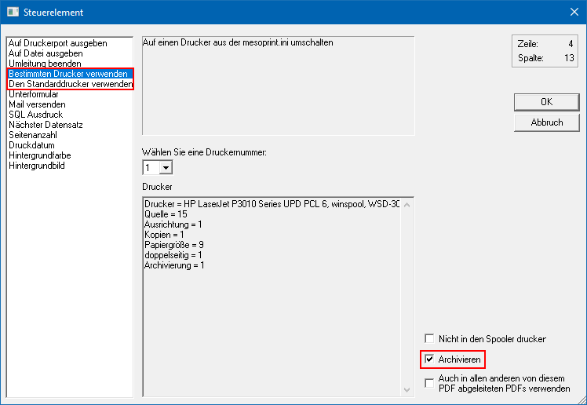

Die beste Methode der automatischen Archivierung ist die Definition pro WinLine Formular. Die Vorteile liegen auf der Hand:
ü Die Einstellung ist allgemein gültig, da alle Benutzer mit den gleichen Formularen arbeiten (Ausnahme "mandantenspezifische Formulare").
ü Es werden automatisch nur jene Dokumente ins Archiv abgelegt, welche dort auch wirklich sichtbar sein sollen.
Die Aktivierung erfolgt dabei durch Einfügen des Steuerelements "Den Standarddrucker verwenden" bzw. "Bestimmten Drucker verwenden" in die jeweiligen Formulare. Durch Setzen der Option "Archivieren" wird der jeweilige AUX-Befehl um die Option "ARCHIVE" erweitert. Sobald diese Kennung im AUX-Befehl vorhanden ist, wird das Dokument während des Drucks in das Archiv abgelegt.

Ø Archivieren
Mit dieser Option wird gesteuert, dass dieser Ausdruck immer archiviert wird, auch wenn der Archiv-Button oder die Archiv-Option in der Druckersteuerung nicht aktiv ist.
Hinweis
Wenn "XX-Formular" nicht gedruckt, aber archiviert werden sollen, so ist dieses wie folgt zu lösen:
ü VBScript-Formel "Dontprint =
true"
Der Druck muss direkt auf den Drucker erfolgen; nicht in den
Spooler!
ü Anpassung Steuerelement "AUX
PRINTER1;ARCHIVE;NOSPOOL"
Das Dokument wird immer direkt auf den Drucker
umgeleitet und archiviert.